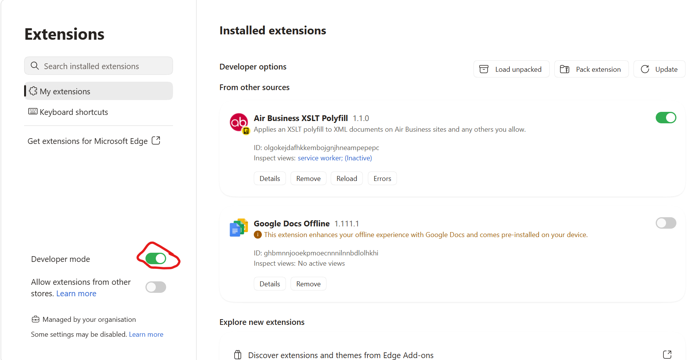
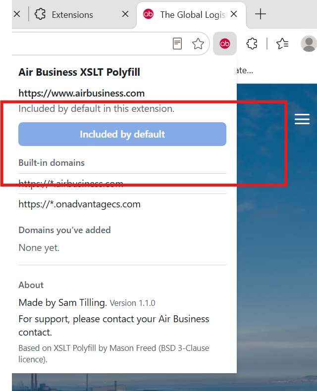

Air Business XSLT Polyfill
Some Air Business systems display pages built from XML. Newer versions of Microsoft Edge and Google Chrome no longer display these pages properly; you may see raw code or a blank page instead.
This extension fixes that. Once installed, those pages display as normal.
Air Business sites work straight away. If you need it on another site, you can add that site yourself at any time by clicking the extension's red ab button in your browser toolbar (see Adding another site).
It works in Microsoft Edge and Google Chrome on Windows and Mac.
On an Air Business computer? It's installed for you
On company-managed computers, the extension is installed automatically in Microsoft Edge; you'll see the red ab button next to the address bar. You don't need to download or install anything; skip to Using it.
The steps below are only for computers where it hasn't been installed automatically, or if your Air Business contact asks you to install it yourself.
Before you start
Download the latest version (zip file)
- Save the zip file somewhere permanent, such as your Documents folder.
- Right-click the zip file and choose Extract All…, then Extract.
- Leave the extracted folder where it is. Don't move, rename or delete it later; the browser loads the extension from that folder every time it starts.
If your Documents folder is in OneDrive: right-click the extracted folder and choose Always keep on this device. Otherwise the extension may stop working when OneDrive frees up space.
Installing
Microsoft Edge
- Open Edge and type
edge://extensionsinto the address bar, then press Enter. - Turn on Developer mode (switch near the bottom of the left-hand panel; on a narrow window, open the menu at the top left first).
- Click Load unpacked (top right, under Installed extensions).
- Select the extracted folder (the one containing
manifest.json) and click Select Folder. - Air Business XSLT Polyfill now appears in your list of extensions.

The Edge extensions page after installing: Developer mode is circled in red, Load unpacked is at the top right, and Air Business XSLT Polyfill is listed and switched on.
Google Chrome
- Open Chrome and type
chrome://extensionsinto the address bar, then press Enter. - Turn on Developer mode (switch at the top right).
- Click Load unpacked.
- Select the extracted folder (the one containing
manifest.json) and click Select Folder. - Air Business XSLT Polyfill now appears in your list of extensions.
Pin it to your toolbar
- Click the Extensions button (the jigsaw-piece icon) next to the address bar.
- Click the pin (Chrome) or eye (Edge) icon next to Air Business XSLT Polyfill.
The extension's red ab button now sits in your toolbar, next to the address bar. Click it whenever you want to check which sites it's working on or add a new one. To open this guide at any time, click the Help button at the top of the pop-up.
Can't see Developer mode or Load unpacked? Your computer's settings may block it. Please contact your Air Business contact.
Using it
Air Business sites work automatically
There's nothing to do for these sites:
airbusiness.comand all its sub-sitesonadvantagecs.comand all its sub-sites
If you click the red ab button while on one of these sites, it shows Included by default:

Adding another site
You can add any other site yourself, straight from the extension button in your toolbar. If a page isn't displaying properly on a site that isn't listed above:
- Go to that page.
- Click the red ab button in your browser toolbar, next to the address bar. (If you can't see it, click the jigsaw-piece Extensions button first.)
- Click Add this domain.
- Your browser asks for permission. Click Allow.
The page reloads and should now display correctly. The extension remembers the site from then on.
Removing a site
Click the red ab button in your toolbar, then either:
- click Remove this domain while you're on that site, or
- click Remove next to the site under Domains you've added.
Air Business sites are built in and can't be removed.
Your privacy
- The extension only works on Air Business sites and any sites you choose to add.
- It only changes pages that are XML documents; normal web pages are left alone.
- It doesn't collect, store or send any of your information anywhere. Everything happens inside your browser.
Troubleshooting
| Problem | What to try |
|---|---|
| A page still shows raw code or a blank page | Click the extension's icon and check the site is listed. If not, click Add this domain. Then refresh the page. |
| The extension has disappeared | Check you haven't moved or deleted the extracted folder. If you have, put it back or install again using the steps above. |
| Chrome shows a warning about developer mode extensions | This is normal for extensions installed this way. Choose to keep the extension enabled. |
| The browser says the extension is corrupted or can't load | Delete the extension from the extensions page, extract a fresh copy of the zip file and install again. |
| Air Business XSLT Polyfill is listed twice on the extensions page | You installed it yourself before it was installed automatically. Click Remove on the copy that has the Developer mode badge, and keep the one installed by your organisation. You may need to add any extra sites again. |
Releases
You can check which version you have by clicking the red ab button in your toolbar; it's shown under About.
The download link always gives you the newest version. You can also see every version, and what changed in each, on the releases page.
Updating to a new version
- Download the latest version, extract it, and replace the contents of your existing extension folder with it. Keep the folder in the same place.
- Go to
edge://extensionsorchrome://extensions. - Click Reload (the circular arrow) on Air Business XSLT Polyfill.
- Click the red ab button and check the version under About matches the new one.
Sites you've added are kept when you update.
Support
You can reopen this guide at any time from the Help button in the extension's pop-up.
For anything else, please contact your Air Business contact.
Credits
Made by Sam Tilling.
Based on the open-source XSLT Polyfill by Mason Freed, used under the BSD 3-Clause licence (see LICENSE).